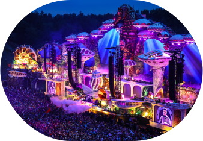
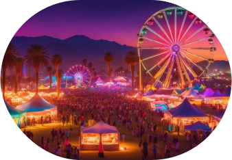
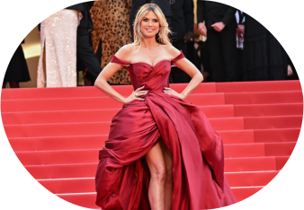
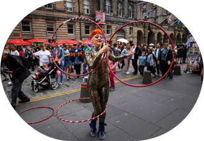
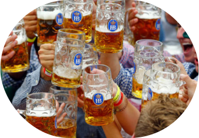
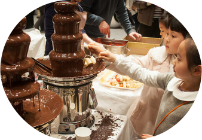

Festivalurile sunt evenimente culturale spectaculoase care adună mii sau chiar milioane de oameni din întreaga lume. Fie că sunt dedicate muzicii, artei, mâncării sau tradițiilor, acestea creează experiențe unice. Descoperă câteva dintre cele mai celebre festivaluri internaționale!
| Festival | Țară | Perioadă | Specific |
|---|---|---|---|
| Tomorrowland | Belgia | Iulie | Muzică |
| Coachella | SUA | Aprilie | Muzică |
| Festivalul de la Cannes | Franța | Mai | Artă și culture |
| Edinburgh Fringe Festival | Scoția | August | Artă și culture |
| Oktoberfest | Germania | Septembrie | Gastronomie |
| Salon du Chocolat | Franța | Octombrie | Gastronomie |
Unul dintre cele mai mari festivaluri de muzică electronică, organizat în Boom, Belgia, în două weekenduri din iulie. Scenografiile spectaculoase și DJ-i celebri precum Martin Garrix și Armin van Buuren atrag sute de mii de fani. Experiența este completată de campingul „DreamVille” și efecte vizuale impresionante.
Festival de muzică și artă desfășurat în Indio, California, în aprilie, pe parcursul a două weekenduri. Reunește artiști din diverse genuri muzicale și este un simbol al culturii pop. Pe lângă concerte, oferă expoziții de artă și activități interactive.
Cel mai prestigios festival de film, organizat anual în mai, pe Riviera Franceză. Oferă premiere internaționale și premiază cele mai bune producții cinematografice, cu Palme d’Or drept trofeu principal. Covorul roșu atrage celebrități și profesioniști din industria filmului.
Cel mai mare festival de artă și teatru din lume, desfășurat în august. Include spectacole de teatru, comedie, dans și improvizație, în sute de locații din Edinburgh. O platformă deschisă atât pentru artiști consacrați, cât și pentru debutanți.
Cel mai mare festival al berii, ținut anual în München, din septembrie până în octombrie. Oferă bere bavareză tradițională, preparate locale și muzică live. Vizitatorii poartă costume tradiționale și se bucură de parade și atracții diverse.
Cel mai mare festival dedicat ciocolatei, organizat la Paris în octombrie-noiembrie. Include degustări, demonstrații live și o defilare de modă cu rochii din ciocolată. Atrage maeștri ciocolatieri și pasionați de gastronomie din întreaga lume.
